Отрисовка для резки и др.
Как известно, макет для плотерной резки не должен иметь абрис.
Такие же требования предъявляются к макетам для нанесения на футболки и т.д.
Предлагаю простой пример — лого icq!
Для начала рисуем многоугольник, соответственно 8 граней
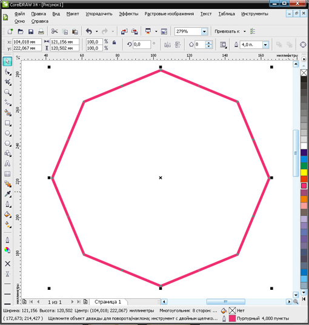
Преобразуем пару граней в кривые
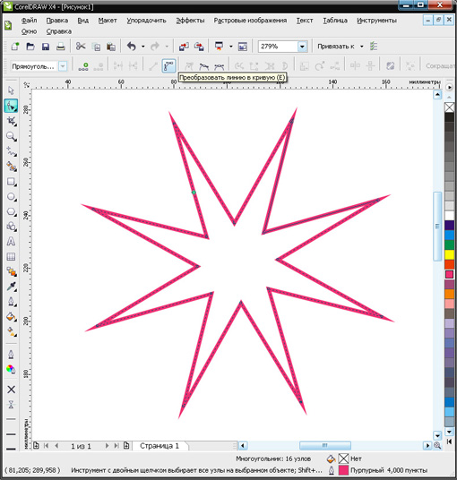
Создаём подобие цветка
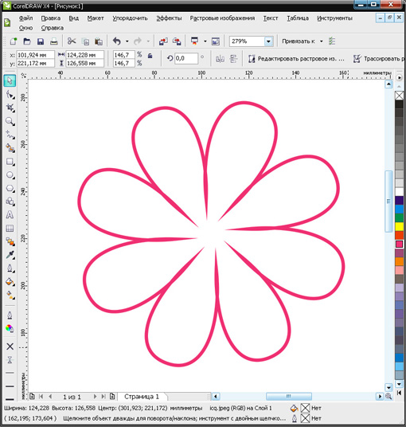
Придаём цветку и абрису немного динамики
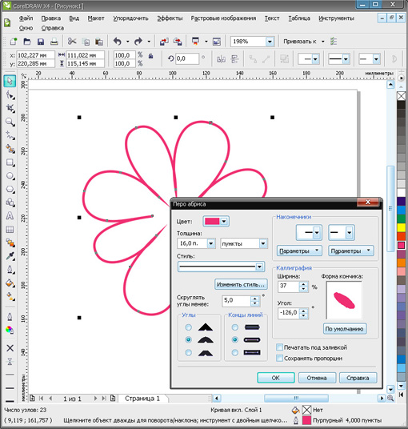
Рисуем, как в логотипе, кружок, и передаём ему свойства абриса.
Кривая цветка не заходит вовнутрь кружка
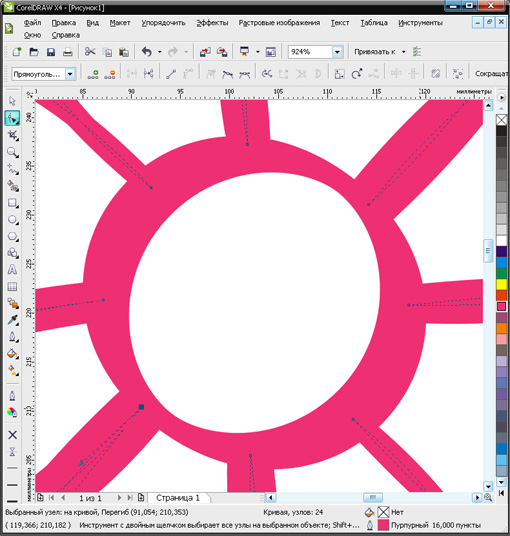
Выделяем обе кривые и объединяем их
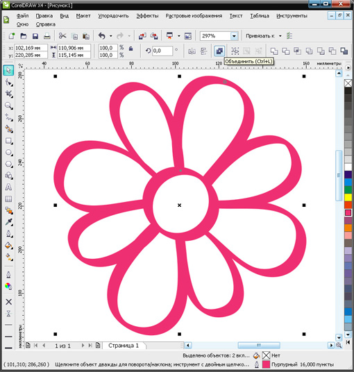
Преобразуем абрис в объект
P.S. в 13 версии абрис оставался под объектом нулевой толщиной, и вылазил когда его не ждёшь. Для этого необходимо объект, полученный из абриса поместить на уровень ниже, а нулевой абрис удалить.

В полученном объекте сокращаем количество узлов и вручную доводим до совершенства.
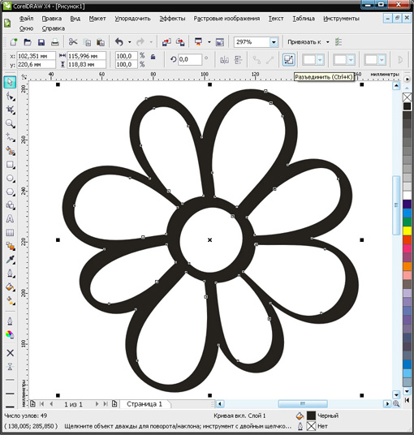
Разъединяем, получаем: 8 лепестков, сердцевину и чёрное вокруг, т.е. 10 объектов.
Причём "черное вокруг" лежит поверх всего остального. Двигаем его в самый низ
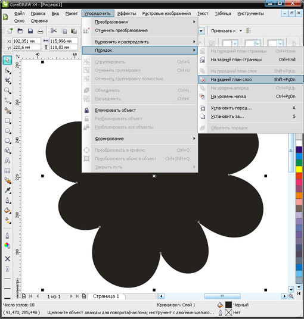
Окрашиваем соответственно лепестки и сердцевину. Окончательно доводим объекты до совершенства
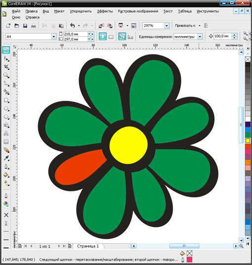
Выделяем всё и исключаем.
P.S. В 13 версии функция исключения отсутствует, необходимо скопировать лепестки и сердцевину в буфер. Выделить всё и комбинировать. Вставить из буфера.
Получается вот так. Для наглядности, вниз помещён прямоугольник
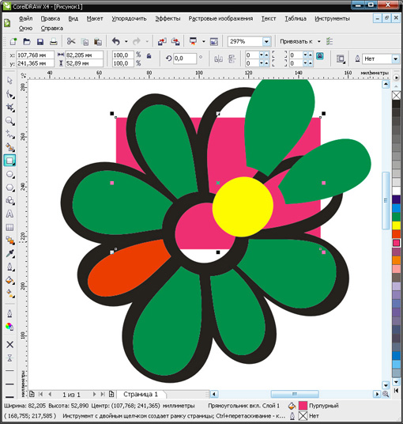
Конечно, логотип не один в один, задача была другая.
Имея терпение и фантазию за пол часа можно нарисовать...
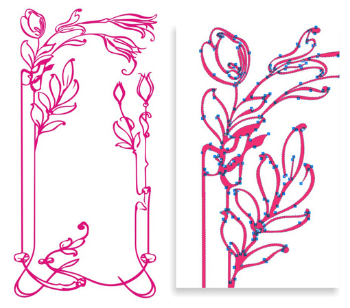
Не желательно что бы изображения лежали на сторонних ресурсах. Наш форум поддерживает прикрепление максимум 10 файлов к сообщению. Если у вас больше, тогда разбейте урок на несколько сообщений.
Тему отредактировал.
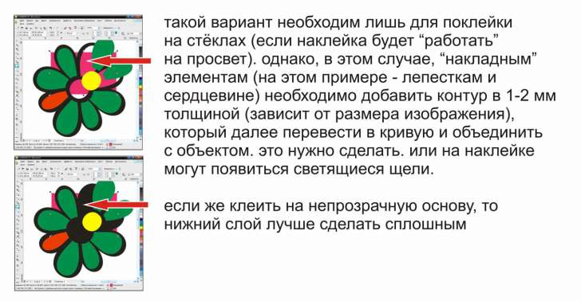
stasys, Полностью согласен!
Что касается принтов на футболки: некоторые требуют границы, некорые требуют нахлёст, а некоторые требуют без вырубки.
ДОПОЛНЕНИЕ
Только предлагаю добрать 1-2 мм не за счёт лепестков, а с их помощью.
Т.е. не наружу, а вовнутрь.
Т.к. иногда бывает принципиально сохранение формы и размеров лепестка.
Для этого:
1. Копируем лепестки в буфер
2. Убираем заливку и задаём необходимый абрис. (Для наглядности сделал красным).
3. Объединяем.
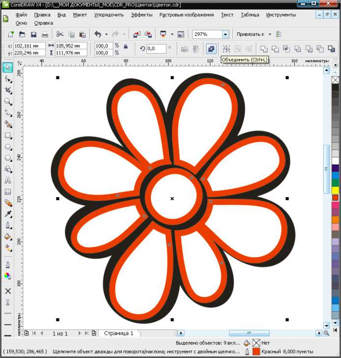
4. Преобразуем абрис в объект
5. Сливаем с основой
6. Вставляем лепестки из буфера. (Для наглядности сделал прозрачными).
P.S....И лепестки остаются такими, какими мы их задумали изначально :)
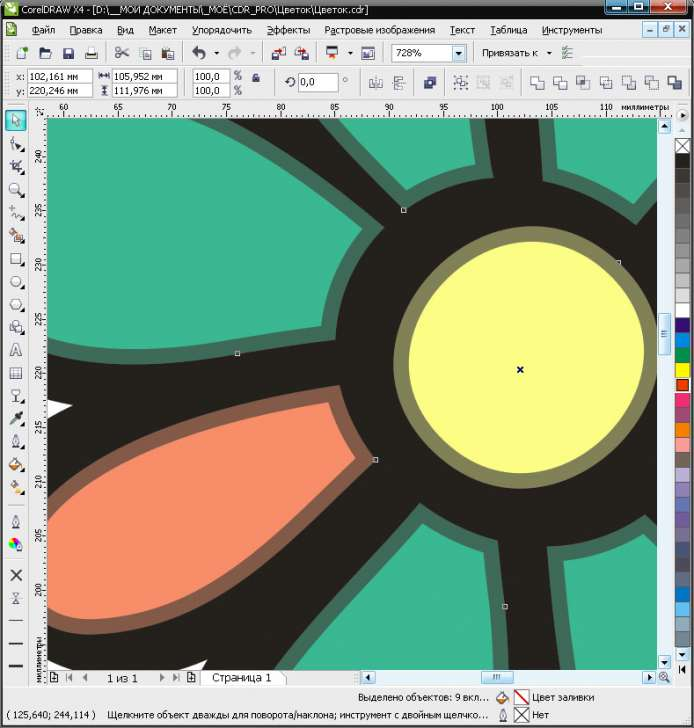
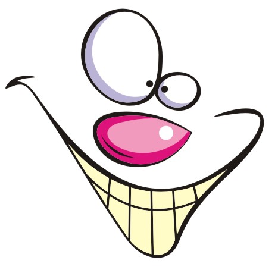
огромное спасибо за полезный урок. Все никак не знала как сделать, чтобы линии имели разную толщину,как будто нарисованы вручную.